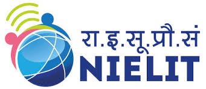

NIELIT--National Institute of Electronics & Information Technology
Posted by Team on 29 July 2018 in • 5 min read
Introduction
National Institute of Electronics & Information Technology (NIELIT),(erstwhile DOEACC Society), an Autonomous Scientific Society under the administrative control of Ministry of Electronics & Information Technology (MoE&IT), Government of India, was set up to carry out Human Resource Development and related activities in the area of Information, Electronics & Communications Technology (IECT). NIELIT is engaged both in Formal & Non-Formal Education in the area of IECT besides development of industry oriented quality education and training programmes in the state-of-the-art areas. NIELIT has endeavoured to establish standards to be the country’s premier institution for Examination and Certification in the field of IECT. It is also one of the National Examination Body, which accredits institutes/organizations for conducting courses in IT in the non-formal sector.
At present, NIELIT has forty(40) offices located at Agartala, Aizawl, Ajmer, Aurangabad, Bhubaneswar, Calicut, Chandigarh, Chennai, Chuchuyimlang, Churachandpur, Delhi, Dibrugarh, Gangtok, Gorakhpur, Guwahati, Haridwar, Imphal, Itanagar, Jammu, Jorhat, Kohima, Kolkata, Kokrajhar, Kurukshetra, Leh, Lucknow, Lunglei, Pasighat, Patna, Pali, Ranchi, Ropar, Senapati, Shillong, Shimla, Silchar, Srinagar, Tezpur, Tura, Tezu with its Headquarters at New Delhi. It is also well networked throughout India with the presence of about 700 + institutes.
Over the last two decades, NIELIT has acquired very good expertise in IT training, through its wide repertoire of causes, ranging from ‘O’ Level (Foundation), ‘A’ Level (Advance Diploma), ‘B’ Level (MCA equivalent), ‘C’ Level (M-Tech level), IT literacy courses such as CCC (Course on Computer Concept), BCC (Basic Computer Course) and other such long term and short term course in the non formal sector like courses on Information Security, ITeS-BPO(Customer Care/Banking), Computer Hardware Maintenance (CHM-O/A level), Bio-Informatics(BI-O/A/B level), ESDM etc, besides, high end courses offered by NIELIT Centres at Post-Graduate level (M.Tech) in Electronics Design & Technology, Embedded Systems etc. which are not normally offered by Universities/Institutions in the formal sector, in association with the respective state Universities.
The basket of activities of NIELIT is further augmented by the wide range of projects that it undertakes. NIELIT has demonstrated its capability and capacity to undertake R&D projects, consultancy services, turnkey projects in office automation, software development, website development etc. NIELIT is also the nodal implementing agency on behalf of DeitY for Data Digitization of the population of 15 assigned States and 2 Union Territories for the creation of National Population Register (NPR) project of Registrar General of India (RGI).
NIELIT is also successfully executing the Agriculture Census and Input Survey project under which tabulation of about 10 crore data records have to be done. NIELIT has planned a roadmap for adopting appropriate pedagogy for metamorphosing NIELIT into an Institute of National Importance.
Vision
To be the leader in the development of industry oriented quality education and training and be the country's premier Institution for examination and certification in the field of Information, Electronics and Communications Technology (IECT).
Mission
To be the single source for quality assurance in computer education among the nation's non-formal institutes, After turning out competent IT professionals in large numbers, NIELIT reach is now being extended to all regions of the country as well as oversea
contact
NIELIT Bhawan,
Plot No. 3, PSP Pocket, Sector-8,
Dwarka, New Delhi-110077,
Helpline No. (Toll Free) - 1800116511
Phone:- 91-11-2530 8300 with 29 lines
Email:- contact@nielit.gov.in